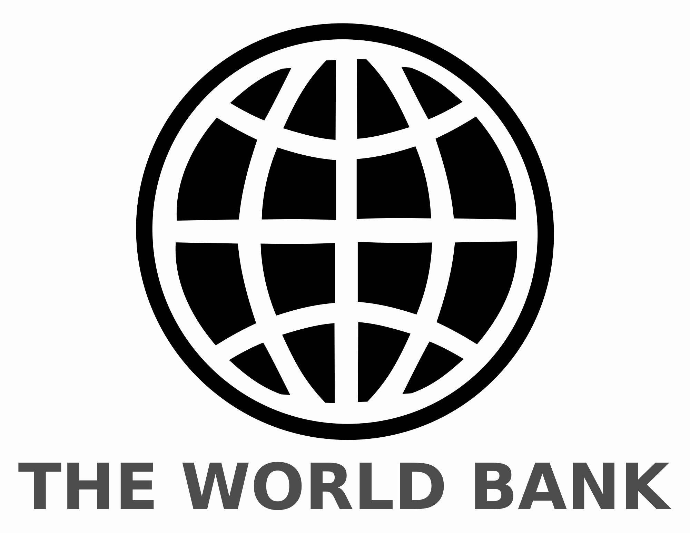
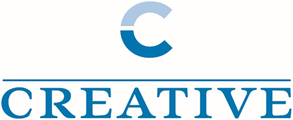

U.S. Embassy Annex Support
Human resources, payroll management, and floor management for catering service.
2019–2021 · Overseas mission support

Strategy. Solutions. Execution.
A U.S.-registered implementation partner integrating management consulting, program and project delivery, workforce and capacity building, translation and stakeholder engagement, technology and responsible AI enablement, procurement, logistics, trade, and overseas mission support.
Illustrative visualization
Who we are
PUL Global Partners is built for organizations that need more than advice. We connect strategy, qualified people, trusted suppliers, technology, local context, and accountable delivery into one coordinated implementation platform.
Our institutional heritage began through PUL Consulting Services in 2010. Today, our Virginia-based company helps government buyers, prime contractors, international organizations, and private-sector partners move from a defined objective to controlled execution, measurable progress, and responsible closeout.
Whether the requirement is a focused advisory assignment or a complex, partner-enabled program, PUL brings the structure, responsiveness, and field awareness needed to keep the mission moving.
What we do
Explore focused capabilities that can stand alone or work together across a complete implementation requirement.
Strategy to execution
People and institutions
Systems and enablement
Operations in motion
Implementation heritage
Selected historical assignments were delivered through PUL Consulting Services and the PUL management team. They are presented transparently as institutional heritage supporting PUL Global Partners today.
Human resources, payroll management, and floor management for catering service.
2019–2021 · Overseas mission supportTraining across multiple provinces with catering support for more than 5,000 participants across assignments.
2018–2019 · Capacity buildingTraining, job placement, employer assessment, participant logistics, and catering support.
2016–2018 · Program implementation

How we deliver
PUL uses a five-gate operating framework that keeps decisions, ownership, quality, and evidence connected from initial requirement through continuity and closeout.
Mission, stakeholders, operating conditions, compliance, and risk.
Aligned scopeTeam, partners, suppliers, work plan, controls, and readiness.
Ready to executeCoordinated services, field decisions, quality assurance, and resolution.
Controlled actionProgress, risk, cost, acceptance, and performance documentation.
Decision visibilityFeedback, corrective action, continuity, learning, and closeout.
Lasting valueWhere PUL fits
PUL can pursue assignments directly, support prime contractors, or assemble partner-enabled teams for specialized and country-specific requirements.
Prime, subcontract, and implementation support.
Partner-enabled program delivery and local coordination.
Consulting, technology, workforce, and operational support.
Procurement ready
Download the 2026 Capability Statement for core competencies, SAM and SBA data, NAICS codes, buyer fit, differentiators, and selected institutional experience.
Perspectives
A practical framework for identifying useful, controlled AI opportunities in daily operations.
Read perspectiveConnecting work plans, vendors, reporting, and issue resolution to mission outcomes.
Read perspectiveHow staffing, language, logistics, facilities, and reporting work together in complex environments.
Read perspectiveStart a conversation
Schedule a focused strategy call or share the essentials for a direct follow-up.
Schedule a Strategy CallThe inquiry form opens an email draft. Your message is sent only when you choose Send.